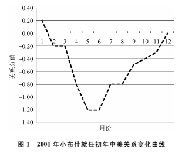

收录于合集
以下文章来源于人文清华讲坛 ，作者刘子夜
人文清华讲坛 .
人文清华系列讲座和在线课程的官方宣传平台
授权人文清华讲坛发布
编者按
4月6日，习近平主席将亲赴美国佛罗里达州“冬季白宫”海湖庄园，同特朗普总统举行中美元首会晤，这也是美国新政府就职以来中美两国元首的首次会晤，举世瞩目。
2017年中美关系走向如何？年初，清华大学国际关系研究院中外关系定量预测组曾做过预测，本文即是其研究成果，并授权人文清华讲坛发布。文章结合此前中美双方的互动对话，以科学实证的方法客观预测未来中美关系，旨在从学术方面客观研究中美关系走向，帮助大家更好地理解两国关系。需特别指出，本预测仅提供学术方面的见解，中美两国关系亦有其他牵涉因素，期待通过两国元首会晤，就未来中美关系达成共识，惠及两国人民。
本文原载于国际关系权威杂志《国际政治科学》2017年第一期，该杂志由清华大学国际关系研究院院长阎学通教授主编，旨在促进有学术价值或现实意义的创新性国际关系理论和政策研究，同时定期发布由清华大学国际关系研究院中外关系定量预测组对当前国际关系做出的定量预测。
视频来源于人文清华讲坛阎学通教授的现场演讲
收看阎学通专场完整视频，请点击 阅读原文
2016年12月2日，美国候任总统特朗普与台湾地区领导人蔡英文通电话，此举打破了美台自1979年“断交”以来的惯例。此后，特朗普公开发表了一系列涉及“一中”政策的敏感言论。以上举措使中美关系迅速恶化。2017年2月10日，国家主席习近平同美国总统特朗普通电话，特朗普强调：“美国政府坚持奉行一个中国政策。”国内许多学者据此认为，特朗普执政初年将与同属共和党的小布什的政策一致，中美关系将先降后升（见图1）。但清华大学当代国际关系研究院中外关系定量预测组认为，此种现象不会重现。我们估计，2017年中美关系将呈现空前的不稳定性，震荡幅度与频率大增。

首先，特朗普对“台独”的支持力度将超过奥巴马。2016年12月8日，美国参议院通过“2017财年国防授权法”，首次写入推动美台高层军事交流等内容，另一方面使台军方高级官员赴美成为可能。奥巴马卸任前已为特朗普支持“台独”创造条件。台湾问题是中美关系中最核心、最敏感的问题。特朗普虽强调奉行“一中”政策，但不排除运用以上手段大打“台湾牌”，以此作为对华贸易谈判的筹码。
其次，特朗普政府在南海和朝核问题上立场日趋强硬。特朗普任内，美国战略重心将进一步转向亚太，聚焦东亚，“以实力换和平”（peace through strength）成为其外交政策的核心。因此，2017年1月20日，“重振美军”被列入政府优先解决的六大问题之列。特朗普上台前，美国长期削减军力，海军舰艇从1991年的500多艘缩减至2016年的275艘，2016年美空军规模仅为1991年的1/3，而特朗普上台后意于扭转这种趋势。例如，特朗普将继续发展反导系统，以应对来自朝鲜的导弹威胁，并力促韩国尽快部署“萨德”系统。2016年12月4日，特朗普指责中国在南海扩建军事设施；2017年2月8日，中美军机在南海相遇，双方最近时相距仅305米；2月12日，朝鲜再次发射弹道导弹，特朗普次日称，美国将以“非常强硬”的态度对待朝鲜。由此可见，亚太地区安全冲突的风险将进一步增大。
再次，中美关系在人权领域的矛盾将有所缓和。从历史上看，美国处于绝对优势时，一般更关注人权问题；而当美国处于比较优势时，反而更注重实际战略问题。特朗普在就职演说中高呼，我们将“使美国再次伟大”，他认为美国的绝对优势已不复存在。因此，美国有可能减少对中国意识形态领域的指责。但人权领域指责的缓和并不意味着中美两国的战略矛盾会减少。相反，特朗普会利用西藏、台湾问题大做文章，不排除其在执政初年有会见达赖的可能。
最后，中美在经贸领域的摩擦加剧。2017年1月20日，特朗普就职首日公布了联邦政府将优先解决的一系列重大问题，经贸领域的首要任务是退出“跨太平洋伙伴关系协定”（TPP），并就“北美自贸协定”（NAFTA）重新谈判。此外，美国将加大贸易执法力度以维护贸易公平，而非推动贸易自由化，这与2017年1月17日国家主席习近平在瑞士达沃斯世界经济论坛上的主旨演讲形成鲜明对比。习近平在演讲中强调：“我们要坚定不移发展全球自由贸易和投资，旗帜鲜明反对保护主义。”特朗普政府的贸易保护主义使中美贸易摩擦增多，美国将加大对华反倾销的制裁力度。2016年12月4日，特朗普指责中国故意贬低人民币汇率并对美国进口产品征收高额关税；2017年2月2日，美国商务部裁定对华不锈钢板带材征收最高190.71%的反倾销和反补贴税。此外，中美在汇率上的矛盾也将进一步凸显。
虽然，2017年中美两国首脑有多次会晤机会，这为改善双边关系提供了可能，但中国崛起与美国维护世界霸主地位的矛盾难以调和，中美关系在特朗普任内会出现军事和经贸领域紧张与摩擦增大的态势，但双方在意识形态领域的矛盾将有所缓和。特朗普习惯以自己的方式任意解释已有概念，他可能会将中美“新型大国关系”片面理解为“中国必须服从美国”，并支持反华分裂势力，遏制中国。综上所述，笔者认为，2017年中美关系的震荡幅度与频率都会加剧。
收看阎学通专场完整视频，请点击 阅读原文